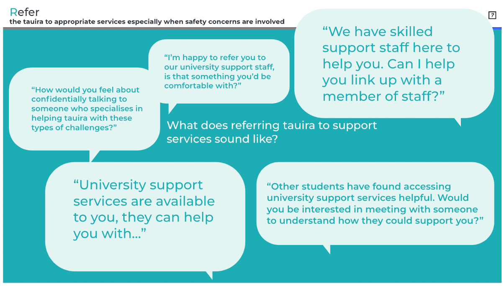

Mental health concerns & other student support
An unofficial guide I made for myself and any keen Waiapapa Taumatau Rau colleagues
Mental health discussed. Staff members can contact the Employee Assistance Programme for individual support.
This is not an official Waipapa Taumata Rau University of Auckland resource.
Emergency
If it is an emergency call 111. You can then call Campus Security as well on 0800 373 7550 or 966 (internal).
If you do not have enough information to call 111 (i.e., the student is not with you, you do not know where they are), Campus Security can call the listed emergency contact for a student, but be careful about this if it risks putting the student in a more difficult position. For example, if you are somewhat concerned about an email or Piazza/Ed Discussion post that indicates the student is very upset and they say something like “I just want to die” — having their parents called when they were letting off steam, albeit doing so inappropriately, could make things a lot worse for them.
For the most updated central University emergency contact information: Contacts and information sources.
üì± To do: Save Auckland University Security ‚Äî 0800 373 7550 ‚Äî in your phone.
üí° Adding it to your Contact Favourites and/or having it start with ‚ÄòA‚Äô will put it near the top for easy access.
Discussion boards
If the concern you’re dealing with is based on a post on Piazza/Ed Discussion or another discussion board you manage, and is currently public, please make the post private to instructors.
Main go-to: Te Papa Manaki | Campus Care
What will often be the best option if you are concerned about a student during business hours (but the situation does not appear to warrant a 111 call) is to reach out to the Campus Care team. They can handle acute concerns (e.g., a student indicates a desire to self-harm on Piazza or via email), as well as less time-sensitive referrals for issues around:
Mental health concerns and support planning
Family violence and other safety issues
Anxiety and distress issues impacting study
Financial concerns and stress
Stress related to caring responsibilities
Bullying, harassment & discrimination
Sexual harm, including sexual harassment and assault
For those facing an exceptional circumstance outside of their control, one of the team can work out a support plan with you looking at academic and other needs.
For less acute situations
You can encourage students to reach out the student advisers and/or make a referral, with the student's permission. There is an advisor for Stats and (at time of writing) a separate advisor for Data Science. Lizzie Tafili is the adviser for Māori and Pacific students (from experience, she is awesome to work with!).
Provide students with a link to the 'Getting support' hub, or having it linked prominently in your slides/course,
Making a referral - sample language (non-emergency)

Source: From the Building Connections training (2023-07-13)